Measured results, analysis scope and completion status.
IBDmix evidence is disabled for this run. Archaic tract results are excluded from the main analysis.
| label | threshold | observed multi | expected multi | oe | ci low | ci high | fdr | status |
|---|---|---|---|---|---|---|---|---|
| family:ERV1 | 5 | 80704 | 67502.23929720602 | 1.1955751518800417 | 1.1787687087849188 | 1.2135958052925275 | 0.0018324171247709477 | complete |
| family:ERV1 | 10 | 34849 | 28931.148007077816 | 1.204549504619534 | 1.1861220480328254 | 1.2255691836294733 | 0.002565383974679327 | complete |
| family:ERVK | 5 | 8476 | 7058.598393726573 | 1.2008049654068946 | 1.1643174662945097 | 1.2394340740412366 | 0.0018324171247709477 | complete |
| family:ERVK | 10 | 3689 | 3077.9220515871293 | 1.198535875233672 | 1.1503281856671377 | 1.2512279433338809 | 0.002565383974679327 | complete |
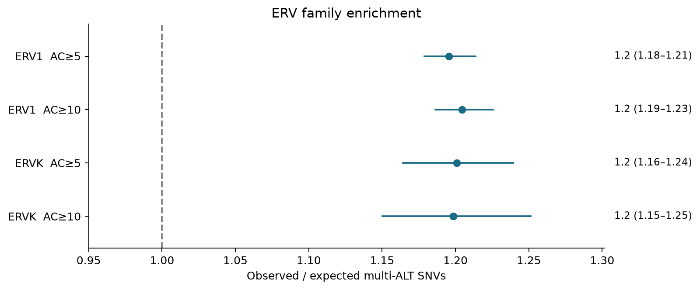
Complete primary result table · Analysis definition and input provenance
{
"estimand": "multi_ALT_occupancy_among_fixed_eligible_SNV_sites",
"target_scope": "exposure_counter_sites_inside_recorded_EUR_LD_partition",
"background_scope": "all_chromosomes_recorded_in_global_counters",
"minimum_training_sites": 1,
"bootstrap_replicates": 2000,
"seed": 20261027,
"missing_rule": "any_unsupported_target_stratum_makes_full_scope_OE_unavailable"
}
AC5/AC10 requires two distinct nonreference ALT bases to meet the specified count threshold. Reference-base observation is established separately by joint genotypes. This SNV-denominator statistic is not a mutation rate per callable genomic base.
| stage | status | result status | reason |
|---|---|---|---|
| primary | reused | complete | |
| summary | complete | complete | |
| spatial | complete | complete | |
| windows | complete | complete | |
| alleles | complete | complete | |
| time | complete | complete_descriptive_all_allele_panel | |
| selection | complete | complete | |
| candidates | complete | complete | |
| genotypes | complete | complete | |
| ld | complete | complete |
The primary estimator is decomposed into strand-aware aligned-base head, body and tail partitions, with short elements and ambiguous overlaps retained. The end length and normalized-bin count are recorded in the spatial manifest. Partitions use expected-count weights and the same target domain as their total. External flanks are separate. Joined repeat records do not necessarily represent complete proviruses or TSS.
primary_spatial_partitions.tsv
| family | threshold | partition | observed multi | expected multi | oe | ci low | ci high | expected weight | excess contribution | status |
|---|---|---|---|---|---|---|---|---|---|---|
| ERV1 | 5 | head | 12894.0 | 11707.867818354838 | 1.1013106912418007 | 1.0794232801568735 | 1.123641912250793 | 0.173444139635223 | 0.017571745678283845 | complete_descriptive |
| ERV1 | 5 | body | 47668.0 | 37754.92801601686 | 1.2625636573794472 | 1.2371132002816672 | 1.2885376928905352 | 0.5593137117982924 | 0.14685545379223375 | complete_descriptive |
| ERV1 | 5 | tail | 14921.0 | 13053.573661925844 | 1.1430586279618578 | 1.1103513631754303 | 1.1767293401805918 | 0.1933798611398977 | 0.027664657610128356 | complete_descriptive |
| ERV1 | 5 | short_element | 5182.0 | 4950.088988340283 | 1.0468498671854127 | 1.0137253436356906 | 1.0810567687848547 | 0.07333221889936875 | 0.0034356047158470445 | complete_descriptive |
| ERV1 | 5 | ambiguous_overlap | 39.0 | 35.780812568222146 | 1.0899696569394541 | 0.817745156878264 | 1.4528167401003287 | 0.0005300685272185207 | 4.7690083548251995e-05 | complete_descriptive |
| ERV1 | 5 | total | 80704.0 | 67502.23929720602 | 1.1955751518800417 | 1.1741020756930396 | 1.2174409477551174 | 1.0 | 0.1955751518800417 | complete_descriptive |
| ERV1 | 10 | head | 5536.0 | 4975.14467665127 | 1.1127314600479592 | 1.0799843329381755 | 1.1464715407601593 | 0.17196499341934596 | 0.019385864785300584 | complete_descriptive |
| ERV1 | 10 | body | 20864.0 | 16315.645386353342 | 1.2787725833665746 | 1.2494496128126327 | 1.3087837262111717 | 0.5639473892415813 | 0.15721307058171088 | complete_descriptive |
| ERV1 | 10 | tail | 6269.0 | 5536.557468069625 | 1.1322920490132198 | 1.0931594479574718 | 1.1728255074354292 | 0.19137012698960762 | 0.02531674621937525 | complete_descriptive |
| ERV1 | 10 | short_element | 2163.0 | 2088.463526904794 | 1.0356896216452833 | 0.9891840816934456 | 1.0843815749111216 | 0.07218737142383223 | 0.0025763399736841073 | complete_descriptive |
| ERV1 | 10 | ambiguous_overlap | 17.0 | 15.336949098781858 | 1.108434271412574 | NA | NA | 0.0005301189256309409 | 5.7483059462807506e-05 | low_support_or_few_events_blocks |
| ERV1 | 10 | total | 34849.0 | 28931.14800707787 | 1.2045495046195316 | 1.1806119048008206 | 1.22897245333465 | 1.0 | 0.20454950461953159 | complete_descriptive |
| ERVK | 5 | head | 1137.0 | 1021.0508525466028 | 1.1135586412412355 | 1.0524031193182235 | 1.178267932431008 | 0.14465348438778958 | 0.01642665313788765 | complete_descriptive |
| ERVK | 5 | body | 5500.0 | 4401.90766291955 | 1.2494582851726936 | 1.2016334114331344 | 1.2991865834728904 | 0.623623475565887 | 0.15556804280810135 | complete_descriptive |
| ERVK | 5 | tail | 1680.0 | 1484.3045123210657 | 1.13184322088526 | 1.0760452508074987 | 1.1905345762202513 | 0.2102831793972388 | 0.027724411669724905 | complete_descriptive |
| ERVK | 5 | short_element | 159.0 | 150.01679572299938 | 1.0598813235125204 | 0.9178957222328152 | 1.223830106973443 | 0.021253057243818967 | 0.0012726611964472404 | complete_descriptive |
| ERVK | 5 | ambiguous_overlap | 0.0 | 1.3185702163538056 | 0.0 | NA | NA | 0.00018680340526608 | -0.00018680340526608 | low_support_or_few_events_blocks |
| ERVK | 5 | total | 8476.0 | 7058.598393726568 | 1.2008049654068955 | 1.1634734942307527 | 1.2393342625301575 | 1.0 | 0.20080496540689552 | complete_descriptive |
| ERVK | 10 | head | 473.0 | 443.37725758118575 | 1.066811596472988 | 0.9733035843351946 | 1.1693031862680385 | 0.14405084019348666 | 0.009624266606602115 | complete_descriptive |
| ERVK | 10 | body | 2427.0 | 1921.0710986072013 | 1.2633577183892897 | 1.2033458630954514 | 1.326362414632898 | 0.624145467756925 | 0.16437352633147975 | complete_descriptive |
| ERVK | 10 | tail | 728.0 | 648.0664757481935 | 1.1233415509721023 | 1.0440016991212138 | 1.208710906507726 | 0.21055324497708408 | 0.025969963797682554 | complete_descriptive |
| ERVK | 10 | short_element | 61.0 | 64.86027311345742 | 0.9404832430060107 | 0.7344450475666641 | 1.2043225470790828 | 0.021072747141212465 | -0.0012541815707993252 | complete_descriptive |
| ERVK | 10 | ambiguous_overlap | 0.0 | 0.5469465370910892 | 0.0 | NA | NA | 0.00017769993129262548 | -0.00017769993129262548 | low_support_or_few_events_blocks |
| ERVK | 10 | total | 3689.0 | 3077.9220515871266 | 1.1985358752336732 | 1.1516276460613586 | 1.2473547757689132 | 1.0 | 0.19853587523367322 | complete_descriptive |
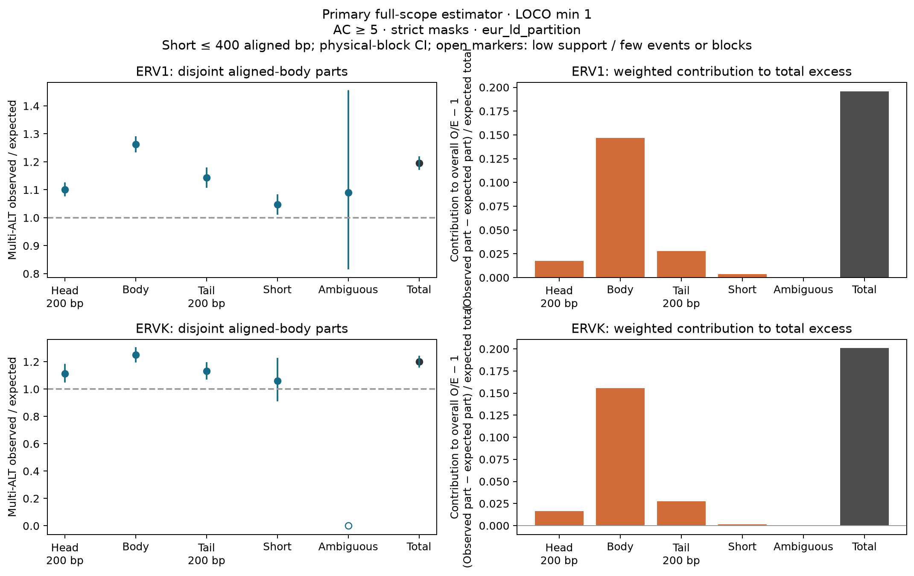
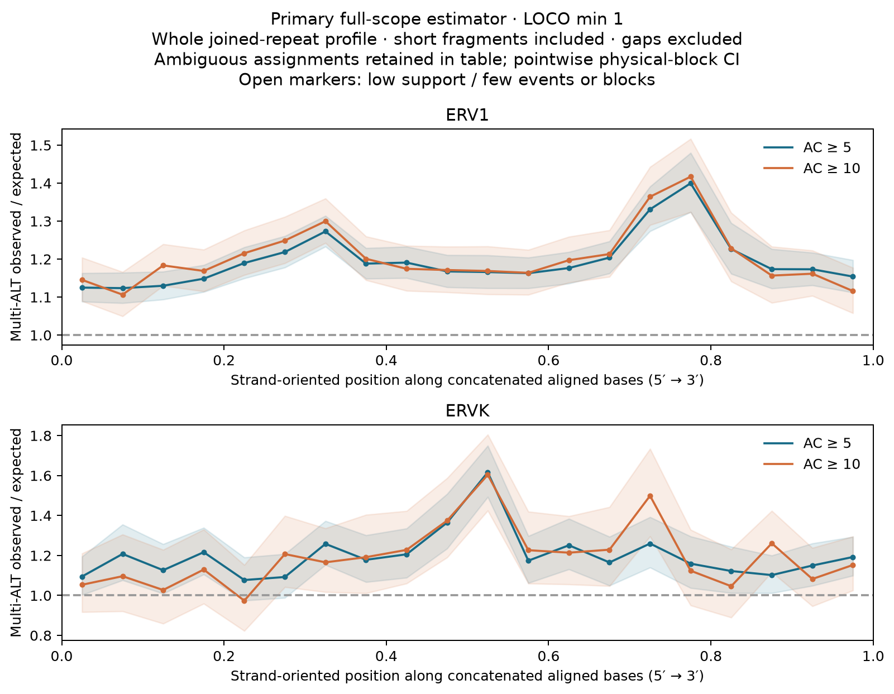
primary_counter_reconciliation.tsv
family_counter_reconciliation.tsv
The common-support sensitivity applies the recorded training minimum and removes unsupported observed and expected counts together.
The full gnomAD HERV catalog, with no default 500-site cap, is followed across every original PSAM sample. Primary, secondary and additional ALT bases are audited separately. Primary time models use officially unrelated ancient individuals aged 0–10,000 BP; modern EUR samples remain a separate comparison group. Exact represented nucleotides are counted by their native PGEN allele indices. A reference base cannot be inferred as two minus one ALT when split records have unknown other-ALT encoding. Unmeasurable bases remain unavailable. Shared PCs and available region, data-source and coverage covariates support descriptive two-sided temporal associations, not selection coefficients or proof of historical tri-allelic occupancy.
Genetic adjustment: verified_shared_PCs. Raw family curves are not PC-adjusted.
Actual full-catalog execution counts: {"n_PSAM_samples": 16339, "sample_age_scopes": {"metadata_excluded": 1900, "primary_ancient": 13891, "older_ancient_descriptive": 45, "modern": 503}, "catalog_sites": 241499, "exact_HQ_ALT_contrasts": 36480, "n_fixed_contrasts": 36480, "n_tested_primary_strict_AC5": 36480, "maximum_genotype_chunk_rows": 64}. See the complete sample and allele-availability audits below.
fixed_panel_family_trajectories.tsv
| family | group | partition | role | region | measurement source | expected fixed contrasts | cohort | age scope | time bin |
|---|---|---|---|---|---|---|---|---|---|
| ERV1 | case | all_partitions | primary | all | all | 16093 | ancient | primary_ancient | 0 |
| ERV1 | case | all_partitions | primary | all | all | 16093 | ancient | primary_ancient | 1 |
| ERV1 | case | all_partitions | primary | all | all | 16093 | ancient | primary_ancient | 2 |
| ERV1 | case | all_partitions | primary | all | all | 16093 | ancient | primary_ancient | 3 |
| ERV1 | case | all_partitions | primary | all | all | 16093 | ancient | primary_ancient | 4 |
| ERV1 | case | all_partitions | primary | all | all | 16093 | ancient | primary_ancient | 5 |
| ERV1 | case | all_partitions | primary | all | all | 16093 | ancient | primary_ancient | 6 |
| ERV1 | case | all_partitions | primary | all | all | 16093 | ancient | primary_ancient | 7 |
| ERV1 | case | all_partitions | primary | all | all | 16093 | ancient | primary_ancient | 8 |
| ERV1 | case | all_partitions | primary | all | all | 16093 | ancient | primary_ancient | 9 |
| ERV1 | case | all_partitions | primary | all | all | 16093 | modern | modern | modern |
| ERV1 | case | all_partitions | secondary | all | all | 668 | ancient | primary_ancient | 0 |
| ERV1 | case | all_partitions | secondary | all | all | 668 | ancient | primary_ancient | 1 |
| ERV1 | case | all_partitions | secondary | all | all | 668 | ancient | primary_ancient | 2 |
| ERV1 | case | all_partitions | secondary | all | all | 668 | ancient | primary_ancient | 3 |
| ERV1 | case | all_partitions | secondary | all | all | 668 | ancient | primary_ancient | 4 |
| ERV1 | case | all_partitions | secondary | all | all | 668 | ancient | primary_ancient | 5 |
| ERV1 | case | all_partitions | secondary | all | all | 668 | ancient | primary_ancient | 6 |
| ERV1 | case | all_partitions | secondary | all | all | 668 | ancient | primary_ancient | 7 |
| ERV1 | case | all_partitions | secondary | all | all | 668 | ancient | primary_ancient | 8 |
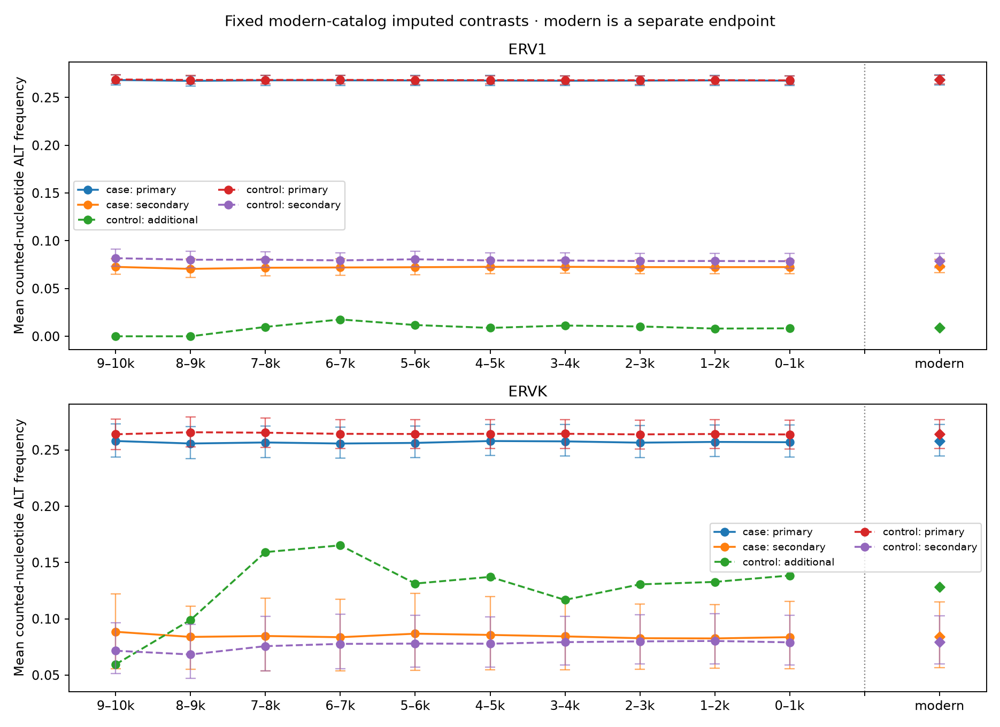
Incomplete personal means are observed-pair conditional. Formal personal models require the complete frozen panel; period comparisons retain fixed pair and composition weights. Person and chromosome uncertainty have separate scopes. These quantities are not ancient gnomAD O/E.
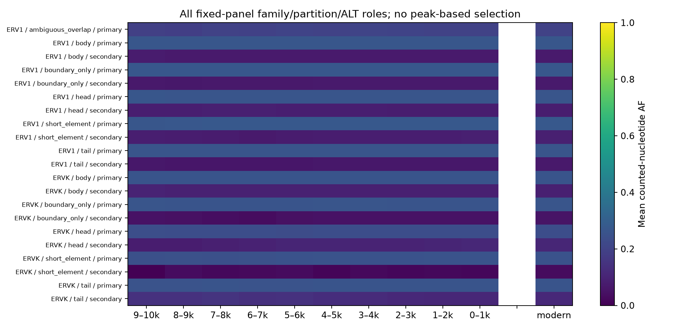
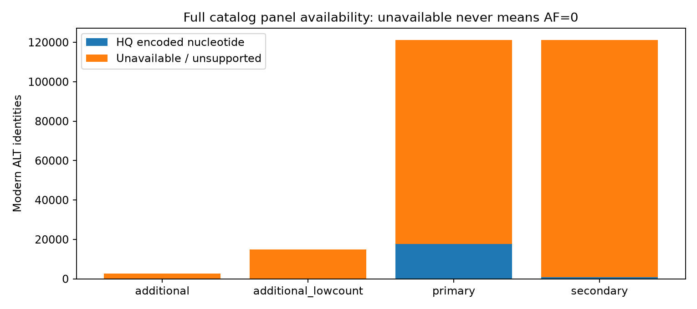
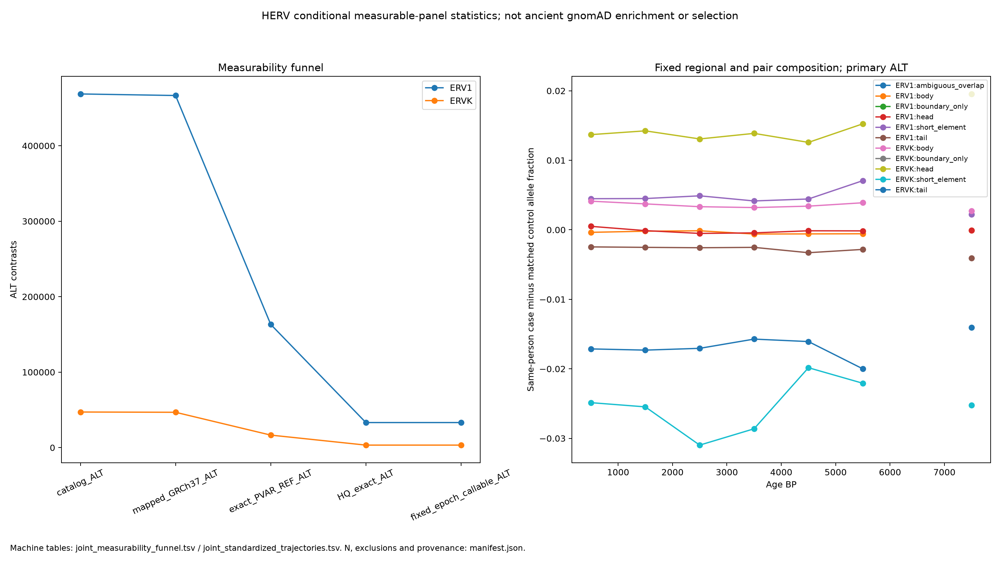
sample_time_region_coverage.tsv
matched_locus_role_trajectories.tsv
joint_measurability_funnel.tsv
joint_person_statistics.tsv.gz
joint_fixed_panel_trajectories.tsv
joint_standardized_trajectories.tsv
standardized_family_trajectories.tsv
regional_fixed_panel_family_trajectories.tsv
Published Akbari 2026 statistics are attached to their exact original REF/ALT contrasts. The modern catalog is fixed before this join, and no coefficient is transferred to an unrepresented third base. Raw S, SE, calibrated X, P_X, posterior and FDR are preserved. Signed effects are not reoriented under the default raw_only contract. Counts are descriptive base identities, not independent loci or a new enrichment test; the ancient data overlap the source study.
published_selection_summary.tsv
| family | group | partition | comparison partition | role | catalog bases | mapped bases | matched bases | accepted filter bases | valid accepted filter bases |
|---|---|---|---|---|---|---|---|---|---|
| ERV1 | case | ambiguous_overlap | ambiguous_overlap | REF | 40 | 40 | 6 | 5 | 5 |
| ERV1 | case | ambiguous_overlap | ambiguous_overlap | additional | 1 | 1 | 0 | 0 | 0 |
| ERV1 | case | ambiguous_overlap | ambiguous_overlap | additional_lowcount | 6 | 6 | 0 | 0 | 0 |
| ERV1 | case | ambiguous_overlap | ambiguous_overlap | primary | 40 | 40 | 6 | 5 | 5 |
| ERV1 | case | ambiguous_overlap | ambiguous_overlap | secondary | 40 | 40 | 0 | 0 | 0 |
| ERV1 | case | body | body | REF | 48542 | 48477 | 7213 | 6527 | 6527 |
| ERV1 | case | body | body | additional | 1301 | 1298 | 0 | 0 | 0 |
| ERV1 | case | body | body | additional_lowcount | 6714 | 6710 | 0 | 0 | 0 |
| ERV1 | case | body | body | primary | 48542 | 48477 | 7133 | 6480 | 6480 |
| ERV1 | case | body | body | secondary | 48542 | 48477 | 314 | 235 | 235 |
| ERV1 | case | boundary_only | boundary_only | REF | 27995 | 27927 | 4174 | 3784 | 3784 |
| ERV1 | case | boundary_only | boundary_only | additional | 464 | 464 | 0 | 0 | 0 |
| ERV1 | case | boundary_only | boundary_only | additional_lowcount | 2907 | 2902 | 0 | 0 | 0 |
| ERV1 | case | boundary_only | boundary_only | primary | 27995 | 27927 | 4143 | 3762 | 3762 |
| ERV1 | case | boundary_only | boundary_only | secondary | 27995 | 27927 | 180 | 142 | 142 |
| ERV1 | case | head | head | REF | 13073 | 13055 | 1920 | 1757 | 1757 |
| ERV1 | case | head | head | additional | 317 | 317 | 0 | 0 | 0 |
| ERV1 | case | head | head | additional_lowcount | 1607 | 1606 | 0 | 0 | 0 |
| ERV1 | case | head | head | primary | 13073 | 13055 | 1908 | 1748 | 1748 |
| ERV1 | case | head | head | secondary | 13073 | 13055 | 65 | 47 | 47 |
published_selection_alleles.tsv.gz
Unsupported background strata are removed from both observed and expected counts. This sensitivity estimand has a different support rule from the primary full-scope estimator.
| label | threshold | sensitivity | observed multi | expected multi | oe | ci low | ci high | bootstrap p | fdr |
|---|---|---|---|---|---|---|---|---|---|
| family:ERV1 | 5 | exclude_combined | 80695.0 | 67480.58799014208 | 1.195825383320435 | 1.1789934227681416 | 1.2138880099850045 | 0.0004997501249375312 | 0.0019852332786774655 |
| family:ERV1 | 10 | exclude_combined | 34842.0 | 28915.10343393215 | 1.2049758037217526 | 1.1866432266524116 | 1.2260935363404026 | 0.0004997501249375312 | 0.0019852332786774655 |
| family:ERV1? | 5 | exclude_combined | 488.0 | 504.463337018081 | 0.9673646510856527 | 0.8780217785080844 | 1.05688000499997 | 0.4732633683158421 | 0.5612218561771746 |
| family:ERV1? | 10 | exclude_combined | 209.0 | 212.01085957036156 | 0.9857985596753721 | 0.8513349811657741 | 1.1359756529152603 | 0.8360819590204898 | 0.8736450615272074 |
| family:ERVK | 5 | exclude_combined | 8476.0 | 7057.3848483760485 | 1.2010114485892582 | 1.1644360800407987 | 1.2396857100297682 | 0.0004997501249375312 | 0.0019852332786774655 |
| family:ERVK | 10 | exclude_combined | 3689.0 | 3077.057449555313 | 1.1988726439063149 | 1.1506542273219733 | 1.2517027997395687 | 0.0004997501249375312 | 0.0019852332786774655 |
| family:ERVL | 5 | exclude_combined | 44925.0 | 45203.245799241 | 0.9938445615061193 | 0.9816189556802404 | 1.0061743012988362 | 0.3373313343328336 | 0.43238380809595206 |
| family:ERVL | 10 | exclude_combined | 18829.0 | 19097.33284065911 | 0.9859491980949394 | 0.9701349410845528 | 1.0021544687001835 | 0.08545727136431784 | 0.13784047573528674 |
| family:ERVL-MaLR | 5 | exclude_combined | 89847.0 | 88967.63861800291 | 1.00988405891914 | 0.9977079805504782 | 1.0220103747937639 | 0.11694152923538231 | 0.18171302279894538 |
| family:ERVL-MaLR | 10 | exclude_combined | 37856.0 | 37694.21576418524 | 1.0042920175558734 | 0.9898539959335667 | 1.0198292641719326 | 0.5617191404297851 | 0.6433669583000398 |
| family:ERVL? | 5 | exclude_combined | 990.0 | 1009.216936441271 | 0.9809585672342814 | 0.9211393701262315 | 1.0431614985926903 | 0.5327336331834083 | 0.6205184968097534 |
| family:ERVL? | 10 | exclude_combined | 435.0 | 423.00013778004273 | 1.028368459364893 | 0.9383037481562961 | 1.1190448767188064 | 0.5432283858070964 | 0.6286800420014712 |
| family:Gypsy | 5 | exclude_combined | 5487.0 | 5609.304672824605 | 0.9781961080814285 | 0.9517292629575187 | 1.0060564778618077 | 0.12093953023488256 | 0.18631923354562036 |
| family:Gypsy | 10 | exclude_combined | 2297.0 | 2363.1737532915586 | 0.9719979315107964 | 0.9326257831673062 | 1.0135047520749942 | 0.17691154422788605 | 0.25536180858519686 |
| family:Gypsy? | 5 | exclude_combined | 2510.0 | 2582.980327608797 | 0.9717456897256517 | 0.9316451919820685 | 1.0121812324113046 | 0.16141929035482258 | 0.23631128598137477 |
| family:Gypsy? | 10 | exclude_combined | 1043.0 | 1087.3121864303823 | 0.9592461236217189 | 0.904238945010225 | 1.0180151143404124 | 0.15642178910544727 | 0.23063417166672284 |
| family:unspecified | 5 | exclude_combined | 2047.0 | 2088.3319468720506 | 0.9802081527632814 | 0.9361092211786419 | 1.0245231627674685 | 0.37181409295352325 | 0.46500947271377324 |
| family:unspecified | 10 | exclude_combined | 848.0 | 876.1620282718764 | 0.9678575110959527 | 0.9026568351948716 | 1.0333941422595851 | 0.34632683658170915 | 0.4403909156532845 |
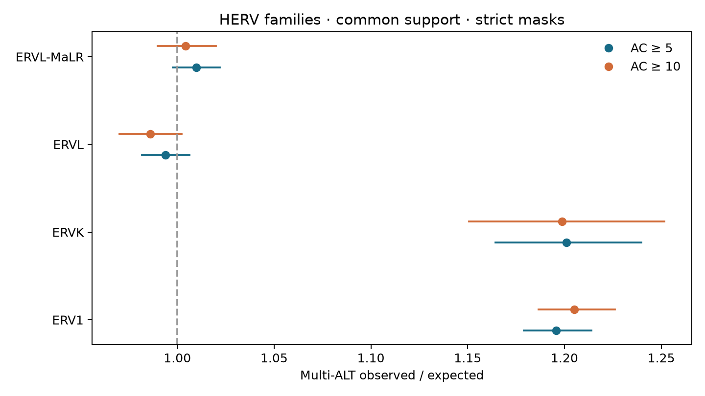
Strand-aware windows use the width, step and flank recorded in the windows manifest. The central window-to-distal-flank ratio tests positional concentration. Peak location is selected on discovery chromosomes, then evaluated on held-out chromosomes. These alignment edges are not transcription start sites.
| family | boundary | start bp | end bp | discovery local ratio | discovery maxT p | validation threshold | validation local ratio | validation ci low | validation ci high |
|---|---|---|---|---|---|---|---|---|---|
| ERV1 | 5p | 300 | 500 | 1.1440536301210913 | 0.0004997501249375312 | 5 | 1.1269697509325087 | 1.0987797029429724 | 1.15588303653148 |
| ERV1 | 5p | 300 | 500 | 1.1440536301210913 | 0.0004997501249375312 | 10 | 1.1301794953703446 | 1.0872540742297012 | 1.1747996370218374 |
| ERV1 | 3p | -450 | -250 | 1.202480521671845 | 0.0004997501249375312 | 5 | 1.2016793490217157 | 1.1466549148681184 | 1.2593442361264713 |
| ERV1 | 3p | -450 | -250 | 1.202480521671845 | 0.0004997501249375312 | 10 | 1.2235532294043485 | 1.1563001689673222 | 1.2947178815366227 |
| ERVK | 5p | 500 | 700 | 1.2403610295814271 | 0.0004997501249375312 | 5 | 1.2188042323216386 | 1.063631933497114 | 1.3966144771913895 |
| ERVK | 5p | 500 | 700 | 1.2403610295814271 | 0.0004997501249375312 | 10 | 1.1944019275897524 | 1.0169851068802365 | 1.4027697701556574 |
| ERVK | 3p | -600 | -400 | 1.3337362737959726 | 0.0004997501249375312 | 5 | 1.2702575514058427 | 1.1571523545117868 | 1.3944181512592095 |
| ERVK | 3p | -600 | -400 | 1.3337362737959726 | 0.0004997501249375312 | 10 | 1.2373824439846357 | 1.08293757872831 | 1.413853709351719 |
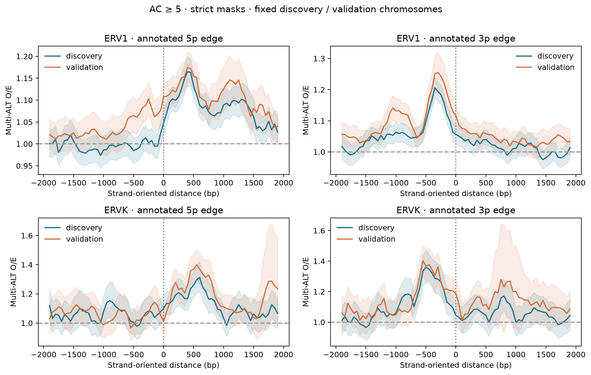
Actual A/C/G/T counts establish whether three observed bases coexist in sampled populations. Results are conditional on the modern candidate set and are not a new genome-wide enrichment estimate. Sample-independent replication requires verified non-overlap with gnomAD.
| family | group | population | n targets | n all expected encoded | n evaluable | n confirmed multi allelic | confirmed fraction | confirmed wilson low | confirmed wilson high |
|---|---|---|---|---|---|---|---|---|---|
| ERV1 | case | AFR | 500 | 76 | 76 | 22 | 0.2894736842105263 | 0.19961016825622824 | 0.3995955517711981 |
| ERV1 | case | EAS | 500 | 76 | 76 | 9 | 0.11842105263157894 | 0.06356819004179068 | 0.2099921775079194 |
| ERV1 | case | EUR | 500 | 76 | 76 | 13 | 0.17105263157894737 | 0.10278019055272239 | 0.27097874699013114 |
| ERV1 | case | SAS | 500 | 76 | 76 | 12 | 0.15789473684210525 | 0.09269497050182374 | 0.2560143245427439 |
| ERV1 | control | AFR | 1963 | 300 | 300 | 98 | 0.32666666666666666 | 0.2760784389482685 | 0.3816377910762407 |
| ERV1 | control | EAS | 1963 | 300 | 300 | 14 | 0.04666666666666667 | 0.027998933682334012 | 0.07679736022792105 |
| ERV1 | control | EUR | 1963 | 300 | 300 | 39 | 0.13 | 0.09657536941275233 | 0.17278042929341172 |
| ERV1 | control | SAS | 1963 | 300 | 300 | 19 | 0.06333333333333334 | 0.040916882383915276 | 0.09679131248552161 |
| ERVK | case | AFR | 500 | 54 | 54 | 17 | 0.3148148148148148 | 0.20679280660052918 | 0.44743444824795103 |
| ERVK | case | EAS | 500 | 54 | 54 | 1 | 0.018518518518518517 | 0.003276487718229061 | 0.09771437488781931 |
| ERVK | case | EUR | 500 | 54 | 54 | 4 | 0.07407407407407407 | 0.02918152776550481 | 0.1755411583859995 |
| ERVK | case | SAS | 500 | 54 | 54 | 8 | 0.14814814814814814 | 0.07703063137605341 | 0.26600115283605885 |
| ERVK | control | AFR | 1989 | 244 | 244 | 68 | 0.2786885245901639 | 0.22619447386627825 | 0.33804308140838313 |
| ERVK | control | EAS | 1989 | 244 | 244 | 18 | 0.07377049180327869 | 0.04716979900249876 | 0.11358401115610842 |
| ERVK | control | EUR | 1989 | 244 | 244 | 18 | 0.07377049180327869 | 0.04716979900249876 | 0.11358401115610842 |
| ERVK | control | SAS | 1989 | 244 | 244 | 24 | 0.09836065573770492 | 0.06699132206828264 | 0.14218053750425108 |
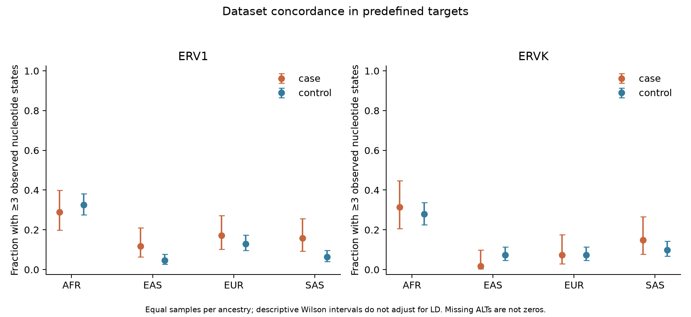
Common physical windows and the intersection of the four ancestry maps supply a shared denominator. Chromosome bootstrap preserves paired regional comparisons. Association is not evidence that HERVs drive LD, especially without sequence and recombination covariates.
| family | ancestry | metric | evidence level | n windows | n chromosomes | beta per percentage point | ci low | ci high | bootstrap p |
|---|---|---|---|---|---|---|---|---|---|
| ERV1 | AFR | boundary_density_per_mb | descriptive_without_sequence_recombination_covariates | 2550 | 22 | 0.004928522125498853 | -0.0034058743256157454 | 0.012558264557216715 | 0.22777222777222778 |
| ERV1 | EAS | boundary_density_per_mb | descriptive_without_sequence_recombination_covariates | 2550 | 22 | 0.004518551132399452 | -0.007616635342990326 | 0.017123963894439893 | 0.4595404595404595 |
| ERV1 | EUR | boundary_density_per_mb | descriptive_without_sequence_recombination_covariates | 2550 | 22 | -0.007971663676008765 | -0.024239721477668442 | 0.009285683580415833 | 0.3596403596403596 |
| ERV1 | SAS | boundary_density_per_mb | descriptive_without_sequence_recombination_covariates | 2550 | 22 | -0.002713715604981776 | -0.014723138472801793 | 0.008672516895625405 | 0.6453546453546454 |
| ERV1 | AFR | log2_bp_weighted_median_block_bp | descriptive_without_sequence_recombination_covariates | 2550 | 22 | -0.006570693264280643 | -0.01935154641721801 | 0.007224969228225919 | 0.3306693306693307 |
| ERV1 | EAS | log2_bp_weighted_median_block_bp | descriptive_without_sequence_recombination_covariates | 2550 | 22 | -0.016768490379500175 | -0.029433971066982808 | -0.0030751722057446684 | 0.015984015984015984 |
| ERV1 | EUR | log2_bp_weighted_median_block_bp | descriptive_without_sequence_recombination_covariates | 2550 | 22 | -0.008319432358759865 | -0.025025590719113176 | 0.009917672237715145 | 0.34065934065934067 |
| ERV1 | SAS | log2_bp_weighted_median_block_bp | descriptive_without_sequence_recombination_covariates | 2550 | 22 | -0.0044256390838311515 | -0.02263662965859234 | 0.017027013063561556 | 0.6553446553446554 |
| ERVK | AFR | boundary_density_per_mb | descriptive_without_sequence_recombination_covariates | 2550 | 22 | -0.03905145938785861 | -0.09543171456714612 | 0.0034336125178376217 | 0.12687312687312688 |
| ERVK | EAS | boundary_density_per_mb | descriptive_without_sequence_recombination_covariates | 2550 | 22 | 0.001977483225093878 | -0.0398438750400896 | 0.04157280021107397 | 0.916083916083916 |
| ERVK | EUR | boundary_density_per_mb | descriptive_without_sequence_recombination_covariates | 2550 | 22 | -0.03980854763771718 | -0.1090909722420827 | 0.013191555563631215 | 0.21178821178821178 |
| ERVK | SAS | boundary_density_per_mb | descriptive_without_sequence_recombination_covariates | 2550 | 22 | 0.018872371651611042 | -0.03750717351843364 | 0.06289199666217431 | 0.4725274725274725 |
| ERVK | AFR | log2_bp_weighted_median_block_bp | descriptive_without_sequence_recombination_covariates | 2550 | 22 | -0.008567007391345055 | -0.07665643295858411 | 0.07735668535780538 | 0.8351648351648352 |
| ERVK | EAS | log2_bp_weighted_median_block_bp | descriptive_without_sequence_recombination_covariates | 2550 | 22 | -0.03619094105046943 | -0.10543653659532055 | 0.013479393503222708 | 0.23276723276723277 |
| ERVK | EUR | log2_bp_weighted_median_block_bp | descriptive_without_sequence_recombination_covariates | 2550 | 22 | -0.0282427481007814 | -0.09053495108185901 | 0.04856023311444419 | 0.4045954045954046 |
| ERVK | SAS | log2_bp_weighted_median_block_bp | descriptive_without_sequence_recombination_covariates | 2550 | 22 | -0.06492496281943176 | -0.11314093951943717 | -0.012180188645874175 | 0.015984015984015984 |
| ERVL | AFR | boundary_density_per_mb | descriptive_without_sequence_recombination_covariates | 2550 | 22 | 0.012001704212898538 | -0.004717139206346937 | 0.032123956553727046 | 0.2047952047952048 |
| ERVL | EAS | boundary_density_per_mb | descriptive_without_sequence_recombination_covariates | 2550 | 22 | 0.01409990815482936 | -0.005890520477641779 | 0.03322485298406928 | 0.15484515484515485 |
| ERVL | EUR | boundary_density_per_mb | descriptive_without_sequence_recombination_covariates | 2550 | 22 | -0.00347786582030228 | -0.016919630351050815 | 0.011191246476337381 | 0.6293706293706294 |
| ERVL | SAS | boundary_density_per_mb | descriptive_without_sequence_recombination_covariates | 2550 | 22 | 0.007685429974710731 | -0.003741638949353485 | 0.01828630069687594 | 0.15184815184815184 |
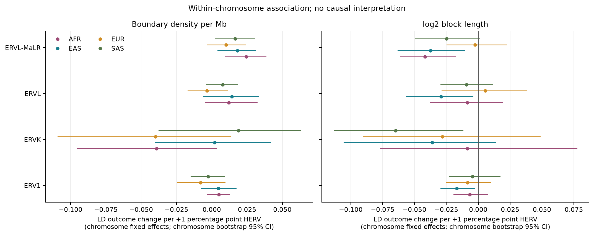
The existing cohort table contains 3,202 people. Its measure is nonreference allele-copy burden within shared reference HERV-related intervals, including indels. It is not a count of HERV insertions or personal multi-allelic loci.
Regional association and descriptive temporal trends do not establish mutation origin or selection. Independent genotype support, repeat-aware mapping, and an appropriate population design are required for those questions.